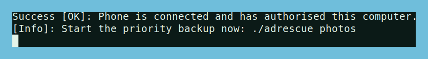
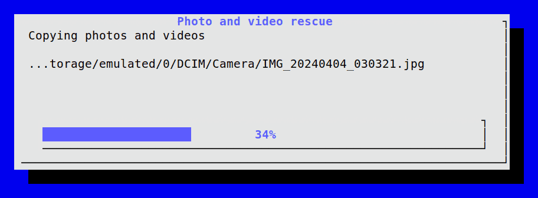
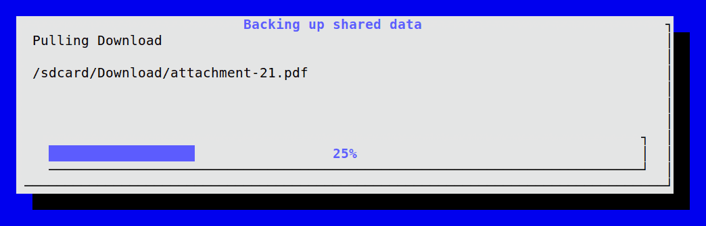
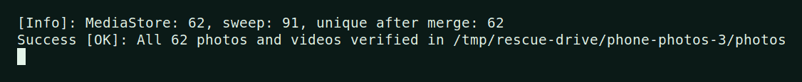
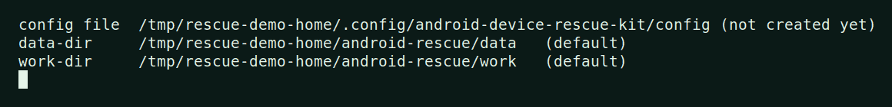
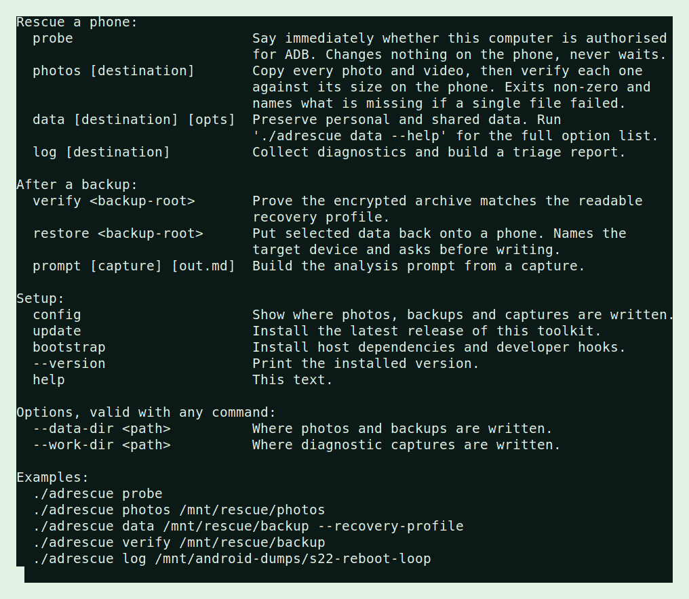

Install
adrescue --helpRun it once in a new terminal. If it prints the command list, you are ready.
ANDROID COMMAND-LINE RESCUE
A focused Android toolkit for fast local backup, disaster-recovery preparation, diagnostic capture, and failure triage before a reset, reflash, or replacement.
Install in one line → View source
Local-first · USB debugging required · No cloud upload
$ adrescue data /mnt/rescue --recovery-profile
✓ backup destination selected
✓ encrypted archive created
$ _
ONE LINE, NO SUDO
Linux or macOS, or a WSL terminal on Windows. It installs into your home directory and gives you a single command called adrescue.
curl -fsSL https://raw.githubusercontent.com/nikolareljin/android-device-rescue-kit/main/install.sh | bashIt puts adrescue in ~/.local/bin and adds that directory to your PATH. Open a new terminal afterwards. Windows and WSL, USB passthrough, choosing where rescued data is written, and running from a git clone instead are in the installation guide.
adrescue --helpRun it once in a new terminal. If it prints the command list, you are ready.
adrescue probeEnable USB debugging, plug the phone in, run this. It answers immediately and changes nothing on the phone.
Rescue the photos, back up shared data before a destructive repair, or capture diagnostics for analysis.
ONE COMMAND, SIX JOBS
adrescue probeAnswers immediately: has the attached phone authorised this computer? It never waits and never changes a phone setting.
adrescue photos /mnt/rescue/photosFinds every photo and video twice over, through MediaStore and a filesystem sweep, copies them, then re-measures each copy against the phone. Exits non-zero if one is missing.
Full usage guide →adrescue data /mnt/rescue/backupAn interactive checklist for downloads, media, screenshots, music, app inventory, and the opt-in recovery profile.
Backup and restore guide →adrescue logBugreport, logcat buffers, dropbox entries, dumpsys and a local triage report for reboot loops, storage faults and radio failures.
Diagnostic details →adrescue prompt captures/<timestamp>Turns a capture into a focused analysis_prompt.md. Read and redact it before sending it anywhere.
adrescue updateUpgrades your installed copy to the newest release in place. Already current, it says so and stops.
WHAT IT LOOKS LIKE
Every picture below is the real program, recorded against a fake phone: invented file names, an invented destination, no device involved. scripts/make_screenshots.sh regenerates them, so they cannot drift from what the tool actually does.






OPTIONAL RECOVERY PROFILE
Select Recovery profile in the backup checklist, or use the additional parameter below. It collects available settings, network information, app recovery guidance, and an owner-selected password-manager export.
adrescue data /mnt/rescue/backup --recovery-profileAn encrypted archive is created with a passphrase. A readable credentials TXT copy is retained only after explicit confirmation.
WHEN YOU CANNOT TAP ANYTHING
Every command here needs USB debugging, and that switch lives behind the phone's own screen. ADB cannot turn ADB on — if it could, a stolen phone would be an open book. The way through is to give the phone a monitor and a mouse over USB-C, unlock it there, and flip the switch by hand.
Recover a phone with a broken screen →
Covers external display over USB-C, the mouse-only route, what to buy and where, and the approaches that look promising but cannot work.
BEFORE YOU WIPE
Backups can contain personal media, account-related metadata, Wi-Fi identifiers, and exported credentials. Keep them on controlled storage, retain the archive passphrase separately, and use official in-app transfers for authenticators, banking apps, and encrypted private data.